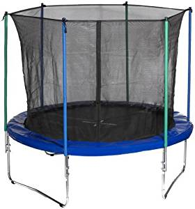

How is tail recursion different from regular recursion? What do continuations have to do with this, what is CPS, and how do trampolines help? This article provides an introduction, with code samples in Python and Clojure.
Recursion and Tail Recursion
Here's a textbook version of a recursive factorial implementation in Python:
def fact_rec(n):
if n == 0:
return 1
else:
return n * fact_rec(n - 1)
Tail recursion is when the recursive call happens in tail position, meaning that it is the last thing the function does before returning its own result. Here's a tail-recursive version of factorial:
def fact_tailrec(n, result=1):
if n == 0:
return result
else:
return fact_tailrec(n - 1, result * n)
The tail call doesn't have to be directly recursive. It can call another function as well, implementing mutual recursion or some more complex scheme. Here's a canonical example of mutual recursion - a silly way to tell whether a number is odd or even:
def is_even(n):
if n == 0:
return True
else:
return is_odd(n - 1)
def is_odd(n):
if n == 0:
return False
else:
return is_even(n - 1)
All the function calls here are in tail position.
Both these examples are simple in a way, because they only contain a single call within each function. When functions make multiple calls, things become more challenging. Computing the Fibonacci sequence is a good example:
def fib_rec(n):
if n < 2:
return 1
else:
return fib_rec(n - 1) + fib_rec(n - 2)
Here we have two recursive calls to fib_rec within itself. Converting this function to a tail-call variant will be more challenging. How about this attempt:
def fib_almost_tail(n, result=1):
if n < 2:
return result
prev2 = fib_almost_tail(n - 2)
return fib_almost_tail(n - 1, prev2 + result)
The last thing fib_almost_tail does is call itself; so is this function tail-recursive? No, because there's another call to fib_almost_tail, and that one is not in tail position. Here's a more thorough attempt:
def fib_tail(n, accum1=1, accum2=1):
if n < 2:
return accum1
else:
return fib_tail(n - 1, accum1 + accum2, accum1)
Note that this conversion wasn't as simple as for the factorial; it's much less obvious how to come up with the algorithm, and we even changed the number of calls - there's only one recursive call here, while the original fib_rec had two. Obviously, it's challenging to have no calls outside a tail position in a function that calls multiple functions.
Blowing up the stack
Recursive solutions tend to be succinct and elegant; however, they carry a dangerous burden - the possibility of blowing up the runtime stack. In Python [1], the default call stack depth is 1000. If we try the fact_rec function shown above in a terminal, we'll get:
>>> fact_rec(900)
... some uselessly huge number
>>> fact_rec(1000)
... spew ...
RecursionError: maximum recursion depth exceeded in comparison
You may say - who needs to compute a factorial of 1000? And that may be true; however, with multiple recursion the problems start much earlier. If you try to compute the 50th Fibonacci number using fib_rec as shown above, you'll end up waiting for a very long time, even though the request seems modest at first glance. The reason is the exponential complexity of the naive implementation.
Note that fib_tail doesn't suffer from this problem because there's no exponential tree of calls, but it will also happily blow the stack when run with a sufficiently large number. The same is true for fact_tail, by the way. Tail recursion itself doesn't solve the stack issue; another ingredient is required and we'll cover it shortly.
Solutions: TCO or manual conversion to iteration
The problems described in the previous section help motivate the discussion of tail calls. Why convert to tail calls at all? Because then, in some languages, the compiler can automatically elide the stack buildup by converting the tail call to a jump. This trick is called tail-call optimization (TCO) [2]. Scheme has been doing it since the 1970s - indeed, since Scheme encourages programmers to write recursive algorithms, TCO is at the core of the language. More modern languages are catching up too - Lua supports TCO and JavaScript will too, once ES6 becomes the de-facto universal version.
Some languages do not support TCO, however. Python is one of those - Guido explicitly states that TCO is unpythonic and he doesn't want it in the language. In the end of this post I'll explain why I think it's not a big deal for Python. For other languages, it's a much bigger problem.
Take Clojure for example. Since Clojure is built on top of the JVM, it has to use JVM semantics for calls (if it wants any speed at all). The JVM doesn't have full support for TCO; so Clojure - a Lisp, mind you - ends up without TCO [3] Clojure takes a pragmatic approach and faces this problem with valor - it encourages a manual TCO conversion using the loop...recur pair:
(defn fib_iterative
[n]
(loop [n n
accum1 1
accum2 1]
(if (< n 2)
accum1
(recur (- n 1) (+ accum1 accum2) accum1))))
Note the similarity between this code and the Python fib_tail shown earlier. This is not a coincidence! Once the algorithm is expressed in tail form, it's pretty easy to convert it to an iteration pattern manually; if it wasn't easy, compilers wouldn't be able to do it automatically for the past 40 years!
Just as a point of reference, here's fib_iterative in Python:
def fib_iterative(n):
accum1, accum2 = 1, 1
while n >= 2:
n -= 1
accum1, accum2 = accum1 + accum2, accum1
return accum1
Only slightly more awkward than the Clojure version - but it's essentially the same approach. Since the tail call carries the whole state around in arguments, we just imitate this using an explicit loop and state variables.
The iterative solution is what we really want here - it avoids the exponential algorithm and the stack explosion. It also doesn't incur the costs of a function call and return for every iteration. The only problem is that we have to do this manually in languages that don't support TCO. The beauty of automatic TCO is that you can write your algorithm recursively, and get the performance & runtime characteristics of an iterative solution.
At this point you may wonder how to convert indirect / mutual recursion to an iterative pattern - for example the even / odd pair above. While this doesn't present a problem for the compiler [4], to do it manually is indeed more challenging. We'll be covering this topic later in the article when we get to trampolines.
More realistic examples
Before we get to the more advanced topics, I'd like to present a few more realistic functions with an elegant recursive formulation that would be challenging to rewrite iteratively.
Let's start with merge sorting. Here's a straightforward Python implementation:
def merge_sort(lst):
n = len(lst)
if n <= 1:
return lst
else:
mid = int(n / 2)
return merge(merge_sort(lst[:mid]), merge_sort(lst[mid:]))
def merge(lst1, lst2):
"""Merges two sorted lists into a single sorted list.
Returns new list. lst1 and lst2 are destroyed in the process."""
result = []
while lst1 or lst2:
if not lst1:
return result + lst2
elif not lst2:
return result + lst1
if lst1[0] < lst2[0]:
# Note: pop(0) may be slow -- this isn't optimized code.
result.append(lst1.pop(0))
else:
result.append(lst2.pop(0))
return result
In a way, merge sort always reminds me of postorder tree traversal - we recurse to the left, then recurse to the right, then combine the results. Such algorithms are fairly tricky to convert to non-recursive code. Try it! Chances are you'll end up emulating a stack, or coming up with an entirely different algorithm.
Merge sort is an example of multiple recursion, which as we've seen even for the simple Fibonacci, presents a challenge for TCO. Another common problem is indirect recursion. We've seen the trivial case of even / odd. For something more realistic consider a recursive-descent parser for this grammar:
<expr> : <term> + <expr>
<term>
<term> : <factor> * <factor>
<factor>
<factor> : <number>
| '(' <expr> ')'
<number> : \d+
The full Python code is here; parse_expr calls parse_term; parse_term calls parse_factor; parse_factor, in term, calls parse_expr. For a complex expression, the call stack will end up containing multiple instances of each function, and at least in theory it's unbounded.
Continuations and CPS
Continuations are a cool concept in computer science, hailing from the earliest days of functional programming. There's tons of information online about continuations; my modest attempt to explain them here is just the beginning! If this looks interesting, make sure to google for more information.
Consider the following expression:
2 * (3 + 4)
One way to reason about its evaluation is:
- Compute value = 3 + 4
- Then compute 2 * value
We can view 2 * value to be the continuation of value = 3 + 4. Similarly, if the expression above is part of the bigger expression:
2 * (3 + 4) + 100
We can say that value + 100 is the continuation of 2 * (3 + 4). This may seem a bit abstract, so let's convert it to Lisp-y syntax [5] to bring it back to the domain of programming. Here is one way to compute 2 * (3 + 4):
(defn expr
[]
(* 2 (+ 3 4)))
Now we can call (expr) and get 14 back. Another way to express the same computation is:
(defn end-cont [value] (print value))
(defn apply-cont
[cont value]
(cont value))
(defn expr-cps
[cont]
(apply-cont cont (+ 3 4)))
(defn make-double-cont
[saved-cont]
(fn [value]
(apply-cont saved-cont (* 2 value))))
(expr-cps (make-double-cont end-cont))
We represent continuations as functions taking a single argument value. We also abstract away the concept of applying a continuation with apply-cont. The final continuation end-cont consumes the result of the whole computation and prints it out. Note how continuations are composed here: we invoke expr-cps, which expects a continuation. We use the make-double-cont constructor to create a continuation that doubles its value. Note how this doubling continuation works: it knows what its own continuation is, and applies it to (* 2 value). In fact, make-double-cont is just syntactic sugar; we could do without it:
(expr-cps (fn [value] (apply-cont end-cont (* 2 value))))
Now let's see how to do this for the longer expression. We keep the utilities defined earlier and add:
(defn make-plus100-cont
[saved-cont]
(fn [value]
(apply-cont saved-cont (+ value 100))))
(expr-cps (make-double-cont (make-plus100-cont end-cont)))
What happens in this last invocation?
- expr-cps gets called with some continuation. It computes 3 + 4 and passes the result into the continuation.
- This continuation happens to be the doubling continuation, which applies 2 * value to its value and passes this result to its own continuation.
- That continuation, in turn, is a "plus 100" continuation: it applies value + 100 to its value and passes the result to its own continuation.
- The last continuation in the chain happens to be end-cont, which prints the overall result: 114
If all of this looks like a masochistic exercise in inverting the call stack (note how the continuations are composed - from the inside out), just a bit more patience - it will all start making sense soon. The -cps suffix of expr-cps stands for Continuation Passing Style, by the way, which is the style of programming we're seeing here; converting "normal" code into this style is called CPS-transform (or CPS conversion).
The lightbulb should go on when you make the following observation: all the expressions computed in this CPS approach are in tail position. Wait, what does it mean? The original function computing the full expression is:
(defn expr
[]
(+ (* 2 (+ 3 4))) 100)
The only tail call here is to the outermost +. Both the * and the inner + are not in tail position. However, if you carefully examine the CPS approach, all the operator calls are in tail positions - their results are passed directly into the relevant continuations, without any changes. For this purpose we do not count the continuation application as a function call. We're going to be using this wonderful feature of CPS very soon to great benefit. But first, a brief dip into theory.
Undelimited and delimited continuations
The formulation of end-cont I'm using in the example above may appear peculiar. It prints its value - but what if we want to do something else with it? The strange print is a trick to emulate real, or unbounded continuations in a language that doesn't support them [6]. Applying unbounded continuations is not just calling a function - it's passing control without hope of return. Just like coroutines, or longjmp in C.
Unbounded continuations do not return to their caller. They express a flow of computation where results flow in one direction, without ever returning. This is getting beyond the scope of the article, but when unbounded continuations can be treated as first-class values in a language, they become so powerful that they can be used to implement pretty much any control-flow feature you can imagine - exceptions, threads, coroutines and so on. This is precisely what continuations are sometimes used for in the implementation of functional languages, where CPS-transform is one of the compilation stages.
I'd love to expound more on the topic, but I'll have to leave it to another day. If you're interested, read some information online and play with a language that supports real continuations - like Scheme with call/cc. It's fun and scary at the same time.
Even though most programming languages don't support real, unbounded continuations, bounded continuations is another deal. A bounded continuation is just a function that returns to its caller. We can still use CPS but just have to be realistic about our expectations. Applying a bounded continuation simply means calling a function - so the stack will grow.
If we cycle back to our expression, we can stop pretending our continuations are anything except a simulation, and just define:
(defn end-cont [value] value)
In fact, we don't even have to pretend (apply-cont cont value) is any different from simply calling (cont value), so now we can rewrite our CPS expression much more succinctly:
(defn real-end-cont [value] value)
(expr-cps (fn [value]
((fn [value] (real-end-cont (+ value 100))) (* 2 value))))
It looks a bit weird because we could just inline the (* 2 value) into the internal call, but keeping them separate will help us later.
Synthesizing tail calls with CPS-transform
Armed with this new tool, let's revisit some of the Python functions from the beginning of the article. For the factorial, we used an extra parameter to get a tail-call version; for Fibonacci we needed two; for more advanced examples (like merge sort) it wasn't very clear how to do the conversion. CPS-transform to the rescue!
It turns out we can convert any function to use tail calls instead of recursion (direct or indirect) by applying the following recipe:
- Pass each function an extra parameter - cont.
- Whenever the function returns an expression that doesn't contain function calls, send that expression to the continuation cont instead.
- Whenever a function call occurs in a tail position, call the function with the same continuation - cont.
- Whenever a function call occurs in an operand (non-tail) position, instead perform this call in a new continuation that gives a name to the result and continues with the expression.
This may not make much sense without examples. Let's review the recursive factorial first:
def fact_rec(n):
if n == 0:
return 1 # (1)
else:
return n * fact_rec(n - 1) # (2)
The line marked with (1) hits step 2 of the recipe; the line marked with (2) hits step 4, since a function call (to fact_rec itself) occurs in an operand position. Here is how we transform this function to CPS:
def fact_cps(n, cont):
if n == 0:
return cont(1)
else:
return fact_cps(n - 1, lambda value: cont(n * value))
The application of steps 1 and 2 is straightforward. Step 4 requires a bit more explanation. Since the call fact_rec(n - 1) is the one occurring in operand position, we extract it out and perform it in a new continuation. This continuation then passes n * value to the original continuation of fact_cps. Take a moment to convince yourself that this code does, in fact, compute the factorial. We have to run it with the "end continuation" discussed before:
>>> end_cont = lambda value: value
>>> fact_cps(6, end_cont)
720
Now let's do the same thing for Fibonacci, which demonstrates a more complex recursion pattern:
def fib_rec(n):
if n < 2:
return 1 # (1)
else:
return fib_rec(n - 1) + fib_rec(n - 2) # (2)
Once again, applying steps 1 and 2 is trivial. Step 4 will have to applied on line marked with (2), but twice, since we have two function calls in operand positions. Let's handle the fib_rec(n - 1) first, similarly to what we did for the factorial:
def fib_cps_partial(n, cont):
if n < 2:
return cont(1)
else:
return fib_cps_partial(
n - 1,
lambda value: value + fib_cps_partial(n - 2, cont))
All calls in fib_cps_partial are in tail position now, but there's a problem. The continuation we crafted for the recursive call... itself has a call not in tail position. We'll have to apply CPS-transform once again, recursively. We'll treat the expression inside the lambda as just another function definition to transform. Here's the final version, which is fully transformed:
def fib_cps(n, cont):
if n < 2:
return cont(1)
else:
return fib_cps(
n - 1,
lambda value: fib_cps(
n - 2,
lambda value2: cont(value + value2)))
And once again, it's easy to see this version contains no calls that aren't in tail position. As opposed to the conversions shown in the beginning of the article, this one is much less ad-hoc and follows a clear recipe. In fact, it can be performed automatically by a compiler or a source transformation tool!
Just to show this is actually helpful in more general cases, let's tackle merge sort again. We have the recursive implementation at the top of this post, with the tricky part in the line:
return merge(merge_sort(lst[:mid]), merge_sort(lst[mid:]))
But transforming merge sort to CPS turns out not much different from transforming Fibonacci. I won't go through the partial stage for this now, and will just present the final answer:
def merge_sort_cps(lst, cont):
n = len(lst)
if n <= 1:
return cont(lst)
else:
mid = int(n / 2)
return merge_sort_cps(
lst[:mid],
lambda v1: merge_sort_cps(lst[mid:],
lambda v2: cont(merge(v1, v2))))
The recursive-descent parser sample has an example of a more complex CPS-transform applied to realistic code, if you're interested.
Trampolines to avoid stack growth in tail-recursive calls
Now we're ready to discuss why we want to place all calls in tail position, even if our language doesn't support TCO. The final tool that ties things together is trampolines.
... not this kind!
Let's borrow a definition from Wikipedia:
As used in some Lisp implementations, a trampoline is a loop that iteratively invokes thunk-returning functions (continuation-passing style). A single trampoline suffices to express all control transfers of a program; a program so expressed is trampolined, or in trampolined style; converting a program to trampolined style is trampolining. Programmers can use trampolined functions to implement tail-recursive function calls in stack-oriented programming languages.
But wait, what's a "thunk-returning function"?
A thunk, in programming language jargon, is simply some expression wrapped in an argument-less function. This wrapping delays the evaluation of the expression until the point at which the function is called:
>>> 2 * (3 + 4)
14
>>> thunk = lambda: 2 * (3 + 4)
>>> thunk
<function <lambda> at 0x7f2c2977c510>
>>> thunk()
14
This example shows how we ask the interpreter to evaluate an expression. Then, we wrap it in a thunk: in Python simply a lambda with no arguments. The thunk itself is just a function. But when we call the thunk, the expression is actually evaluated. Thunks can be used to emulate Lazy Evaluation in languages that don't support it by default (like Python, or Clojure). But for our uses in this post, thunks are an essential part of the solution to the stack explosion problem.
The missing part of the puzzle is this:
def trampoline(f, *args):
v = f(*args)
while callable(v):
v = v()
return v
The trampoline is a Python function. It takes a function and a sequence of arguments, and applies the function to the arguments. Nothing more exciting than delayed evaluation so far. But there's more. If the function returns a callable, the trampoline assumes it's a thunk and calls it. And so on, until the function returns somethings that's no longer callable [7].
Remember how I said, when discussing unbounded continuations, that in "regular" languages like Python we're just cheating and simulating continuations with function calls? Trampolines is what make this viable without blowing the stack. Let's see how. Here's our CPS version of factorial, transformed once again to return a thunk:
def fact_cps_thunked(n, cont):
if n == 0:
return cont(1)
else:
return lambda: fact_cps_thunked(
n - 1,
lambda value: lambda: cont(n * value))
In this case the transformation is straightforward: we just wrap the tail calls in an argument-less lambda [8]. To invoke this function properly, we have to use a trampoline. So, to compute the factorial of 6, we'll do:
>>> trampoline(fact_cps_thunked, 6, end_cont)
720
Now comes the bang! If you carefully trace the execution of this trampoline, you'll immediately note that the stack doesn't grow! Instead of calling itself, fact_cps_thunked returns a thunk, so the call is done by the trampoline. Indeed, if we trace the function calls for the recursive factorial we get:
fact_rec(6)
fact_rec(5)
fact_rec(4)
fact_rec(3)
fact_rec(2)
fact_rec(1)
fact_rec(0)
But if we do the same for the thunked version, we get:
trampoline(<callable>, 6, <callable>)
fact_cps_thunked(6, <callable>)
fact_cps_thunked(5, <callable>)
fact_cps_thunked(4, <callable>)
fact_cps_thunked(3, <callable>)
fact_cps_thunked(2, <callable>)
fact_cps_thunked(1, <callable>)
fact_cps_thunked(0, <callable>)
Remember how, earlier in the post, we've discovered the maximum stack depth of Python by invoking fact_rec(1000) and observing it blow up? No such problem with the thunked version:
>>> trampoline(fact_cps_thunked, 1000, end_cont)
... number with 2568 digits
>>> trampoline(fact_cps_thunked, 2000, end_cont)
... number with 5736 digits
The full Fibonacci sample shows how to use thunks and trampolines to compute the Fibonacci sequence without growing the stack.
I hope the pieces have fallen into place by now. By using a combination of CPS and trampolines, we've taken arbitrary recusive functions and converted them to tail-recursive versions that consume only a bounded number of stack frames. All of this in a language without TCO support.
Trampolines for mutual recursion
If you're left wondering how realistic this is, let's go back to the topic of mutual recursion. As I've mentioned before, Clojure doesn't support TCO, even though it's a Lisp. To overcome this, the recommended programming style in Clojure is explicit loop...recur iteration, which makes tail-recursive algorithms relatively easy (and efficient) to express. But this still leaves Clojure with the problem of mutual or indirect recursion, where loop...recur doesn't help.
Here's that silly even/odd example again, this time in Clojure:
(declare is-even?)
(defn is-odd?
[n]
(if (= n 0)
false
(is-even? (- n 1))))
(defn is-even?
[n]
(if (= n 0)
true
(is-odd? (- n 1))))
We can't get rid of the tail recursion here with loop...recur. But Clojure solves the problem by offering trampoline in the language core! Here's a thunked version:
(declare is-even-thunked?)
(defn is-odd-thunked?
[n]
(if (= n 0)
false
#(is-even-thunked? (- n 1))))
(defn is-even-thunked?
[n]
(if (= n 0)
true
#(is-odd-thunked? (- n 1))))
To invoke it:
=> (trampoline is-even-thunked? 3)
false
Note how small the difference from the non-thunked version is. This is due to Clojure's awesome syntax for anonymous functions, where a thunk is simply #(...).
Clojure's own implementation of trampoline is about what we'd expect. Here it is, pasted in full, including its educational docstring:
(defn trampoline
"trampoline can be used to convert algorithms requiring mutual
recursion without stack consumption. Calls f with supplied args, if
any. If f returns a fn, calls that fn with no arguments, and
continues to repeat, until the return value is not a fn, then
returns that non-fn value. Note that if you want to return a fn as a
final value, you must wrap it in some data structure and unpack it
after trampoline returns."
{:added "1.0"
:static true}
([f]
(let [ret (f)]
(if (fn? ret)
(recur ret)
ret)))
([f & args]
(trampoline #(apply f args))))
Back to reality
While the tools described in this post can (and do) serve as building blocks for some compilers of functional languages, how relevant are they to day-to-day programming in languages like Python and Clojure?
The answer is, IMHO, not very, but they're still worth knowing about. For Clojure, quite obviously Rich Hickey found trampolines important enough to include them in the language. Since Clojure is not TCO'd and loop...recur is only good for direct recursion, some solution had to be offered for mutual/indirect recursion. But how often would you use it anyway?
Algorithms like merge-sort, or any tree-like traversal, tend to be fine just with regular recursion because the supported depth is more than sufficient. Because of the logarithmic nature of depth vs. total problem size, you're unlikely to recurse into merge-sort more than a few dozen times. An array needing just 30 divisions has to contain about a billion items.
The same is true for recursive-descent parsing, since realistic expressions get only so large. However, with some algorithms like graph traversals we definitely have to be more careful.
Another important use case is state machines, which may be conveniently expressed with indirect recursive calls for state transitions. Here's a code sample. Guido mentions this problem in his post on TCO in Python, and actually suggests trampolined tail-calls as a possible solution.
Python generators and coroutines as an alternative
That said, I personally believe that Python offers better ways to solve these problems. I've written before about using coroutines for modeling state machines. Since then, Python grew more supportive features - I've written about using yield from to implement lexical scanning, for example, and similar techniques can be adapted for parsing.
In Python 3.5, even more features were added to support coroutines. I plan to find some time to dig in these and write more about them.
All of this is to say that I wouldn't find much use for direct expression of CPS and trampolines in Python code these days. But I may be wrong! Please feel free to make suggestions in the comments or by email - I'll be really curious to know about realistic use cases where these techniques could be employed in modern Python.
Regardless of their usefulness in modern Python, these topics are fascinating and I feel they improve my understanding of how some programming languages work under the hood.
| [1] | For this post I'm using Python 3.5 to run and test all the code, on an Ubuntu Linux machine; for a different version of Python or environment, the recursion limit may be different. |
| [2] | Alternatively you may see TRE (Tail Recursion Elimination). TCO is more general because tail calls don't necessarily have to be directly recursive (as the is_even / is_odd example demonstrates). |
| [3] | AFAIU, some JVM languages emulate TCO by using trampolines, but Clojure doesn't since it prefers to be compatible with Java and retain high performance. My information may be out of date here, so please feel free to comment if I'm wrong. |
| [4] | The compiler can cheat by emitting constructs not accessible from the source language. What happens in practice, on the lowest level of emitted machine code, is that instead of a call the compiler just prepares a stack frame for the called function and jumps to it. Since the results of the called function will not be used in the caller (except returning them further up the chain), the compiler doesn't have to save any caller state. |
| [5] | I'm using a Lisp (Clojure) here because it unifies the syntax of mathematical operations with function calls, which makes the explanation less convoluted. |
| [6] | Clojure in this case, but Python doesn't support them either. |
| [7] | Astute readers will note this is problematic when our code makes heavy use of first-class functions and we may legitimately return a function from another function call. This is true, and in this case it should be easy to make a thunk something more explicit than simply a lambda. We could, for example, encapsulate it in a type - Thunk, that we would check with isinstance inside trampoline, instead of just callable. |
| [8] | Note that the new continuation constructed for the recursive call also returns a thunk. Figuring out why this is necessary is a good exercise! |